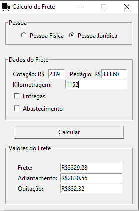

Website
Estas páginas são meu primeiro projeto. O objetivo é solidificar os conhecimentos adquiridos nos cursos de HTML5 e CSS3 que realizei.
Como objetivo secundário, pensei em tornar este website em um portfólio para meus projetos, qualificações e experiências, com intuito de divulgação.
As ferramentas utilizadas foram:
- → Visual Studio Code
- → GIMP
- → Git
- → GitHub Desktop
Futuramente planejo adicionar JavaScript para as interatividades e animações.
Software de Cálculo de Frete
Na minha rotina de trabalho na transportadora, me deparei com uma tarefa que poderia ser automatizada: o cálculo de frete para os motoristas agregados. O sistema de gestão que utilizamos não faz este cálculo automaticamente - apenas as alíquotas de INSS e SEST/SENAT no caso de pessoas físicas.
O cálculo é feito levando em conta a quantidade de kilometros, o valor pago por kilometro rodado, o pedágio atual do trajeto a ser percorrido, o valor do abastecimento antes da viagem (se houver) e as alíquotas que recaem sob pessoas física (no caso de ser pessoa física).
Deste cálculo resultam: o valor total do frete, o adiantamento que é pago antes de o motorista iniciar a viagem (75% do valor total do frete mais o pedágio) e a quitação - sendo o valor restante a ser pago no término da viagem.
Já dei inicio a este projeto, mas ainda está em fase de testes e implementação. A linguagem escolhida foi o Python 3.

As ferramentas utilizadas foram:
- → PyCharm
- → Visual Studio Code
Cálculo de Frete Online
Utilizando a mesma ideia anterior, criei uma plataforma online para realizar os cálculos de valor de frete. A diferença foi na linguagem de programação - JavaScript
Clique aqui para ir para a plataforma.
As ferramentas utilizadas foram:
- → Visual Studio Code
- → Google Chrome